Tomcat
Tomcat源码包安装
- 官方下载source
1 | https://tomcat.apache.org/download-80.cgi |
IDEA创建新空工程
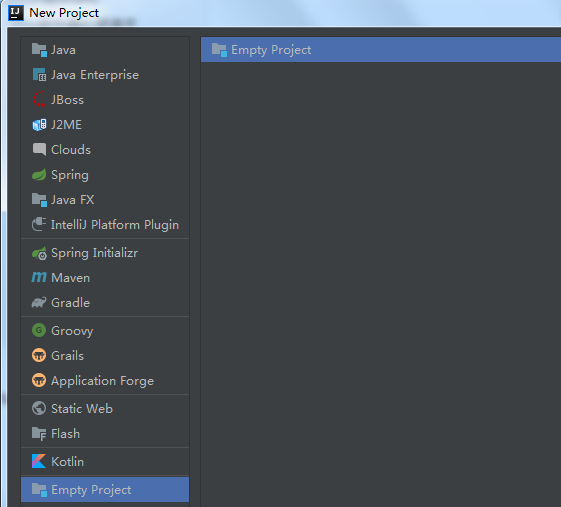
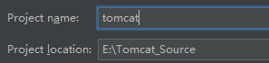
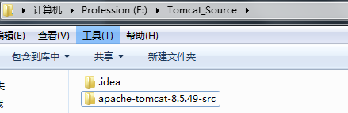
- 进入下载的解压目录，并创建一个目录，命名为home并将conf，webapps目录移入home 目录中
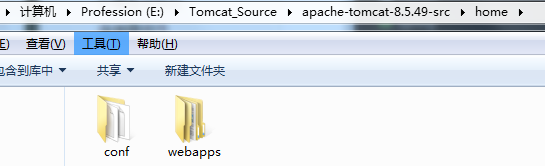
在源码目录下创建pom.xml文件,引入tomcat的依赖包
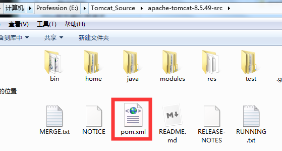
1
2
3
4
5
6
7
8
9
10
11
12
13
14
15
16
17
18
19
20
21
22
23
24
25
26
27
28
29
30
31
32
33
34
35
36
37
38
39
40
41
42
43
44
45
46
47
48
49
50
51
52
53
54
55
56
57
58
59
60
61
62
63
64
65
66
67
68
69
70
71
72
73
74
75
76
77
78
79
80
81
82
83
84
85
86<?xml version="1.0" encoding="UTF-8"?>
<project xmlns="http://maven.apache.org/POM/4.0.0"
xmlns:xsi="http://www.w3.org/2001/XMLSchema-instance"
xsi:schemaLocation="http://maven.apache.org/POM/4.0.0 http://maven.apache.org/xsd/maven-4.0.0.xsd">
<modelVersion>4.0.0</modelVersion>
<groupId>org.apache.tomcat</groupId>
<artifactId>Tomcat8.5</artifactId>
<name>Tomcat8.5</name>
<version>8.5</version>
<build>
<finalName>Tomcat8.5</finalName>
<sourceDirectory>java</sourceDirectory>
<testSourceDirectory>test</testSourceDirectory>
<resources>
<resource>
<directory>java</directory>
</resource>
</resources>
<testResources>
<testResource>
<directory>test</directory>
</testResource>
</testResources>
<plugins>
<plugin>
<groupId>org.apache.maven.plugins</groupId>
<artifactId>maven-compiler-plugin</artifactId>
<version>2.3</version>
<configuration>
<encoding>UTF-8</encoding>
<source>1.8</source>
<target>1.8</target>
</configuration>
</plugin>
</plugins>
</build>
<dependencies>
<dependency>
<groupId>junit</groupId>
<artifactId>junit</artifactId>
<version>4.12</version>
<scope>test</scope>
</dependency>
<dependency>
<groupId>org.easymock</groupId>
<artifactId>easymock</artifactId>
<version>3.4</version>
</dependency>
<dependency>
<groupId>ant</groupId>
<artifactId>ant</artifactId>
<version>1.7.0</version>
</dependency>
<dependency>
<groupId>wsdl4j</groupId>
<artifactId>wsdl4j</artifactId>
<version>1.6.2</version>
</dependency>
<dependency>
<groupId>javax.xml</groupId>
<artifactId>jaxrpc</artifactId>
<version>1.1</version>
</dependency>
<dependency>
<groupId>org.eclipse.jdt.core.compiler</groupId>
<artifactId>ecj</artifactId>
<version>4.5.1</version>
</dependency>
</dependencies>
</project>确认maven
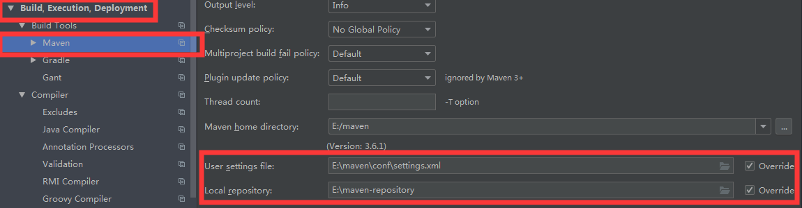
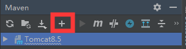
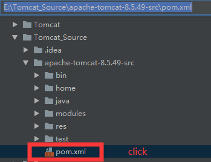
配置idea的启动类， 配置Mainclass，并配置VM参数
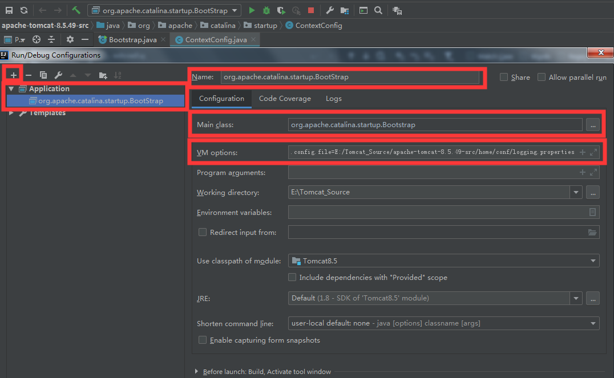
1
org.apache.catalina.startup.Bootstrap
1
2
3
4-Dcatalina.home=E:/Tomcat_Source/apache-tomcat-8.5.49-src/home
-Dcatalina.base=E:/Tomcat_Source/apache-tomcat-8.5.49-src/home
-Djava.util.logging.manager=org.apache.juli.ClassLoaderLogManager
-Djava.util.logging.config.file=E:/Tomcat_Source/apache-tomcat-8.5.49-src/home/conf/logging.propertiesDebug运行
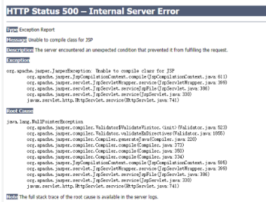
原因是我们直接启动org.apache.catalina.startup.Bootstrap的时候没有加载org.apache.jasper.servlet.JasperInitializer，从而无法编译JSP
解决办法是在tomcat的源码org.apache.catalina.startup.ContextConfig中的configureStart函数中手动将JSP解析器初始化
1
2Ctrl+Shift+Alt+N
查找 ContextConfig类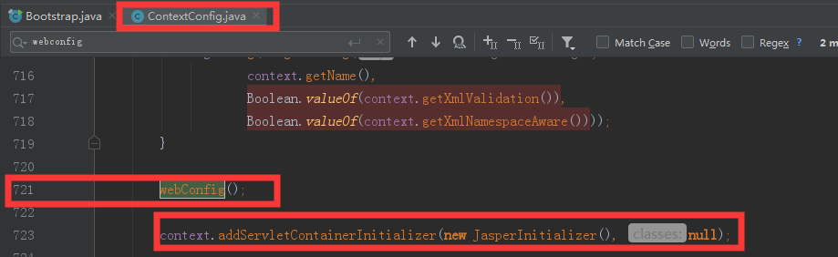
1
context.addServletContainerInitializer(new JasperInitializer(), null);
成功
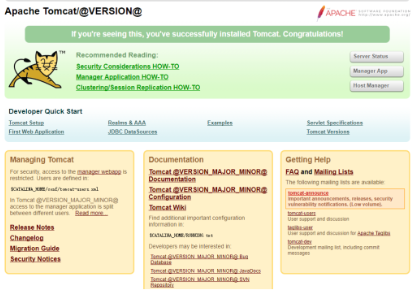
原文作者: 掘金木匠
原文链接: http://goldcarpenter.github.io/2020/02/14/Tomcat_Part4/
版权声明: 转载请注明出处(必须保留作者署名及链接)